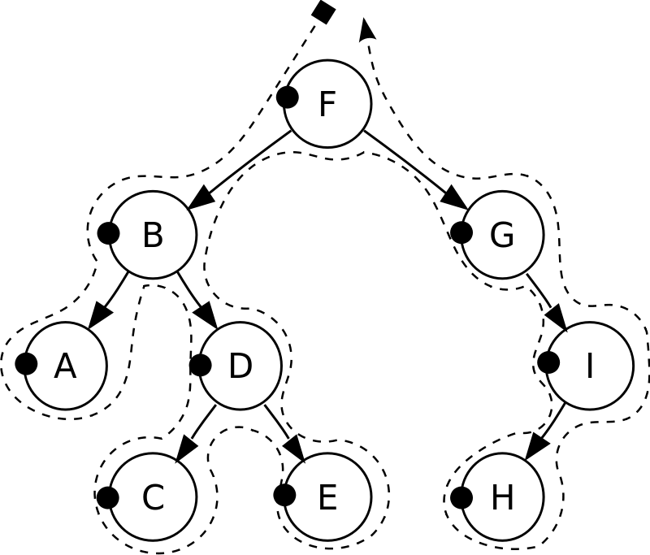

Определение
Бинарное дерево поиска — это двоичное дерево, для которого выполняются следующие
дополнительные условия (свойства дерева поиска):
- Каждый узел имеет не более двух потомков.
- У всех узлов левого поддерева произвольного узла X значения ключей данных меньше, чем значение ключа данных самого узла X.
- У всех узлов правого поддерева произвольного узла X значения ключей данных больше либо равны, чем значение ключа данных самого узла X.
Основным преимуществом бинарного дерева поиска перед другими структурами данных является
возможная высокая эффективность реализации основанных на нём алгоритмов поиска и сортировки.
Основные понятия
- Корневой узел — это узел, находящийся на самом верхнем уровне и не являющийся чьим-либо потомком (узел 8).
- Лист — это узел, не имеющий дочерних элементов (узлы 1, 4, 10, 13).
- Внутренний узел — это любой узел дерева, имеющий потомков, то есть, не являющийся листовым узлом (узлы 8, 3, 5, 9, 12).
- Высота узла — это длина наибольшего пути от него до дочернего узла, являющегося листом.
- Высота дерева — это длина наибольшего пути от корня к листу (высота дерева на примере равна 3).
Простой пример бинарного дерева
Основные операции
 Поиск узла 14
Поиск узла 14
 Удаление узла 18
Удаление узла 18
Основными операциями в бинарном дереве поиска являются:
- INSERT(K, V) — добавление в дерево пары (key, value) = (K, V).
- FIND(K) — поиск узла, в котором хранится пара (key, value) с key = K.
- REMOVE(K) — удаление узла, в котором хранится пара (key, value) с key = K.
Вставка элемента
Задача: вставить пару (K, V) в дерево Т (при совпадении K, заменить V).
Алгоритм:
Алгоритм:
- Если дерево пусто, заменить его на дерево с одним корневым узлом (K, V) и остановиться.
-
Иначе сравнить K со значением ключа корневого узла X.
- Если K>X, рекурсивно добавить (K, V) в правое поддерево Т.
- Если K<X, рекурсивно добавить (K, V) в левое поддерево Т.
- Если K=X, заменить V текущего узла новым значением.
Вставка узла 42
Поиск элемента
Задача: проверить, есть ли узел с ключом K в дереве Т, и если да, то вернуть ссылку
на этот узел.
Алгоритм:
Алгоритм:
- Если дерево пусто, сообщить, что узел не найден, и остановиться.
-
Иначе сравнить K со значением ключа корневого узла X.
- Если K=X, выдать ссылку на этот узел и остановиться.
- Если K>X, рекурсивно искать ключ K в правом поддереве Т.
- Если K<X, рекурсивно искать ключ K в левом поддереве Т.
Поиск узла 14
Удаление элемента
Задача: удалить из дерева Т узел с ключом K (если такой есть).
Алгоритм:
Алгоритм:
- Если дерево T пусто, остановиться;
-
Иначе сравнить K со значением ключа корневого узла Х.
- Если K>X, рекурсивно удалить K из правого поддерева Т;
- Если K<X, рекурсивно удалить K из левого поддерева Т;
-
Если K=X, то необходимо рассмотреть три случая:
- Если обоих детей нет, то удаляем текущий узел и обнуляем ссылку на него у родительского узла;
- Если одного из детей нет, то значения полей ребёнка m ставим вместо соответствующих значений корневого узла;
-
Если оба ребёнка присутствуют, то:
- Если левый узел m правого поддерева отсутствует, то копируем из правого узла в удаляемый поля K, V и ссылку на правый узел правого потомка.
-
Иначе
- Возьмём самый левый узел m правого поддерева;
- Скопируем данные (кроме ссылок на дочерние элементы) из m в X;
- Рекурсивно удалим узел m.
Удаление узла 18
Обход дерева
 Центрированный: A, B, C, D, E, F, G, H, I
Центрированный: A, B, C, D, E, F, G, H, I
 Обратный: A, C, E, D, B, H, I, G, F
Обратный: A, C, E, D, B, H, I, G, F
 Поиск в ширину: F, B, G, A, D, I, C, E, H
Поиск в ширину: F, B, G, A, D, I, C, E, H
Обход дерева — это процесс посещения каждого узла структуры дерева данных ровно
один раз.
Обход дерева итеративно проходит по всем узлам согласно некоторому алгоритму.
Поскольку из данного узла имеется более одного следующего узла, то некоторые узлы должны
быть отложены,
то есть запомнены некоторым способом для дальнейшего посещения.
Деревья можно обходить «в глубину» или «в ширину». Существует три основных способа
обхода «в глубину»:
- прямой (pre-order)
- центрированный (in-order)
- обратный (post-order)
Прямой обход
- Проверяем, не является ли текущий узел пустым или null.
- Показываем поле данных корня (или текущего узла).
- Обходим левое поддерево рекурсивно, вызвав функцию прямого обхода.
- Обходим правое поддерево рекурсивно, вызвав функцию прямого обхода.
Центрированный обход
- Проверяем, не является ли текущий узел пустым или null.
- Обходим левое поддерево рекурсивно, вызвав функцию центрированного обхода.
- Показываем поле данных корня (или текущего узла).
- Обходим правое поддерево рекурсивно, вызвав функцию центрированного обхода.
Обратный обход
- Проверяем, не является ли текущий узел пустым или null.
- Обходим левое поддерево рекурсивно, вызвав функцию обратного обхода.
- Обходим правое поддерево рекурсивно, вызвав функцию обратного обхода.
- Показываем поле данных корня (или текущего узла).
Поиск в ширину
Деревья можно обходить также в порядке уровней, где мы посещаем каждый узел на уровне
прежде чем перейти на следующий уровень.

Прямой: F, B, A, D, C, E, G, I, H
Центрированный: A, B, C, D, E, F, G, H, I
Обратный: A, C, E, D, B, H, I, G, F
Поиск в ширину: F, B, G, A, D, I, C, E, H
Сбалансированные и несбалансированные деревья
Сбалансированное дерево — это такое дерево, для каждого узла которого количество
узлов в его левом и правом поддеревьях
различается не более, чем на 1 (рис. 1).
Само по себе бинарное дерево поиска не является сбалансированным деревом, и в худшем
случае вырождается в список (рис. 2).
При этом теряется производительность, поэтому для наилучшего быстродействия
желательно,чтобы глубина и левого, и правого поддеревьев
в каждом узле была примерно одинакова. Из-за этого ограничения на практике чаще всего
используются сбалансированные деревья (например, AVL-дерево или красно-чёрное дерево).
Однако обычные бинарные деревья также могут оказаться полезны. Как показывает практика,
они ничем не уступают сбалансированным
деревьям при работе со случайным неупорядоченным набором данных. В совокупности с их
довольно простой реализацией, это позволяет
сделать выбор в пользу обычных бинарных деревьев (именно на наборе случайных данных).
Сбалансированное дерево
Несбалансированное дерево